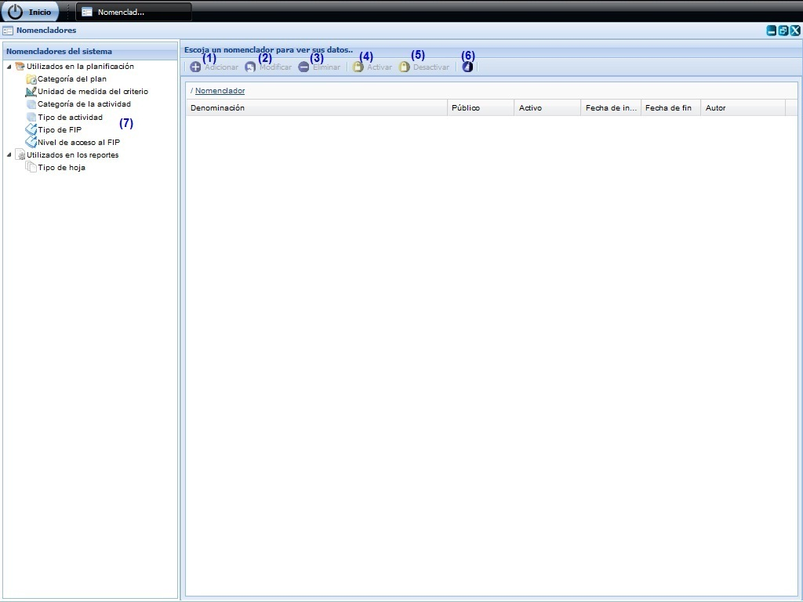
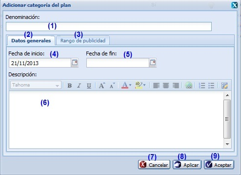
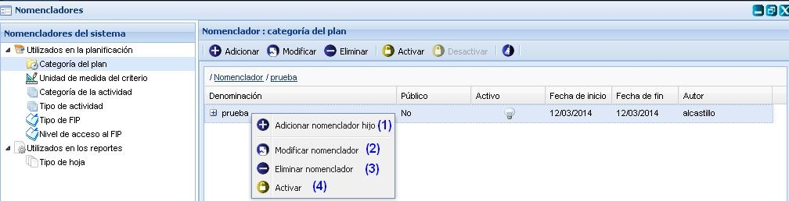
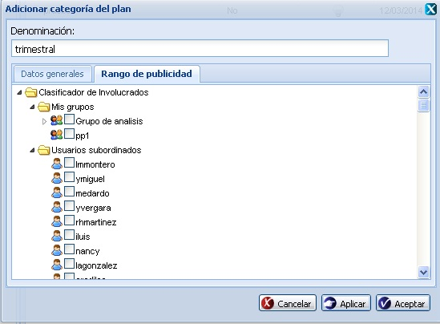
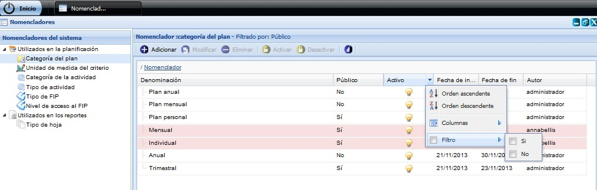

--Nomencladores--
En esta funcionalidad se gestionan los nomencladores con los que trabajará el sistema. Para acceder a esta funcionalidad se selecciona Inicio/Planificación/Planificación de actividades/Configuración/Nomencladores.
Una vez seleccionada la funcionalidad, aparecerá en pantalla la interfaz de la misma, donde el usuario autenticado podrá realizar las acciones que desee, en correspondencia con el acceso que tenga definido, ver Figura 1.

Figura 1. Interfaz y acciones de la funcionalidad Nomencladores.
Las diferentes opciones que conforman la Figura anterior permiten:
- Adicionar nomenclador, ver Adicionar nomenclador, esta acción permite adicionar nomencladores, cuando se presione el botón Aceptar o Aplicar de la interfaz el sistema mostrará un mensaje de información notificando que se adicionó el nomenclador satisfactoriamente.
- Modificar un nomenclador previamente seleccionado en el sistema. Una vez seleccionado el nomenclador y presionada la opción Modificar de la interfaz, el sistema le mostrará la interfaz con los datos cargados, posibilitando que se modifiquen los datos que se requieran. Se puede acceder a esta funcionalidad seleccionando el nomenclador y oprimiendo las teclas (Alt + M). Si al modificar el nomenclador se introduce uno que ya existe, el sistema mostrará un mensaje de error. En caso de seleccionar la opción Modificar y no hacer cambios en la información referente al nomenclador seleccionado se debe mostrar un mensaje. El procedimiento del llenado de los datos y selección de los botones de la interfaz Modificar nomenclador es muy similar al descrito en la funcionalidad de Adicionar nomencladores. Este botón estará deshabilitado hasta tanto no se haya seleccionado un nomenclador y una vez adicionado el mismo se insertará en el sistema con estado Activo.
- Eliminar un nomenclador previamente seleccionado en el listado. Esta acción permite eliminar el nomenclador deseado, una vez seleccionado se procede a seleccionar la opción Eliminar de la interfaz, automáticamente se mostrará un mensaje de confirmación, que se puede Aceptar o Cancelar según sea el caso, de presionar la opción Aceptar el sistema le mostrará un mensaje de información sobre el éxito de la operación realizada, quedando eliminado el nomenclador seleccionado, si cancela el mensaje de confirmación, el sistema permanece en la interfaz principal y no elimina el nomenclador. Se puede realizar esta operación seleccionando un dato del nomenclador en el listado y oprimiendo la tecla (Del). Si se selecciona un nomenclador que está siendo usado, el sistema desactiva el nomenclador, pues no lo puede eliminar y muestra un mensaje de información notificando que el nomenclador ha sido desactivado. En caso de que el nomenclador no esté siendo utilizado en el sistema, se muestra un mensaje de información notificando que el nomenclador fue eliminado correctamente. Este botón estará deshabilitado hasta tanto no se haya seleccionado un nomenclador.
- Activar. Una vez seleccionado el Tipo de Nomenclador deberá seleccionar el elemento que desea activar. Para activar un nomenclador se debe tener presente las siguientes restricciones:
- El botón Activar se habilitará después de seleccionar un nomenclador que se encuentre desactivado, y un nomenclador solo se encontrará desactivado si al seleccionar la opción Eliminar de la interfaz este se encuentra en uso, de lo contrario no se podrá activar, pues siempre que se inserte un nomenclador en el sistema este se archivará con estado Activado.
- Una vez que se ha tenido en cuenta la restricción mencionada anteriormente se debe seleccionar el nomenclador y se opta por la opción Activar de la interfaz, ver opción (4) de la figura 1. Seguidamente el sistema muestra un mensaje de confirmación, se acepta el mensaje de confirmación y muestra un mensaje del éxito de la operación realizada. De cancelar el mensaje de confirmación el sistema permanece en la interfaz principal y no se activará el elemento seleccionado.
- Desactivar. Una vez seleccionado el Tipo de Nomenclador deberá seleccionar el elemento que desea desactivar. Para desactivar un nomenclador se debe tener presente las siguientes restricciones:
- El botón Desactivar se habilitará después de seleccionar un nomenclador que se encuentre activado.Una vez que se ha tenido en cuenta la restricción mencionada anteriormente se debe seleccionar el nomenclador y se opta por la opción Desactivar de la interfaz, ver opción (5) figura 1. Seguidamente el sistema muestra un mensaje de confirmación, se acepta el mensaje de confirmación y muestra un mensaje del éxito de la operación realizada. De cancelar el mensaje de confirmación el sistema permanece en la interfaz principal y no se desactivará el elemento seleccionado.
- Limpiar filtro(s). Esta acción limpiará todos los criterios de búsqueda, deshabilitando los filtros realizados.
- Mostrar nomencladores existentes en la aplicación.
Nota: es importante tener en cuenta que la gestión de los diferentes nomencladores a emplear en el sistema se efectuará sobre dos agrupaciones cada una con su propia categorización y los tipos de nomencladores que puede insertar:
- Nomencladores utilizados en la planificación
- Categoría del plan
- Unidad de medida del criterio
- Categoría de la actividad
- Tipo de actividad
- Tipo de FIP
- Nivel de acceso al FIP
- Nomencladores utilizados en los reportes
Sobre cada uno de los nomencladores insertados en la se pueden ejecutar.
Adicionar nomenclador
Para acceder a esta funcionalidad se debe presionar el botón Adicionar, opción (1) de la figura 1. Una vez accedida a esta el sistema le mostrará una ventana donde se podrán especificar los datos relacionados con el nomenclador que se desea adicionar, ver Figura 2.

Figura 2. Interfaz Adicionar nomenclador.
Las opciones de la figura anterior permiten:
- Introducir la denominación del nomenclador que desea insertar.
- Seleccionar la pestaña donde se gestionan los datos generales del nomenclador.
- Seleccionar la pestaña donde se introducen los datos del rango de publicidad del nomenclador.Ver Rango de publicidad.
- Seleccionar la fecha de inicio.
- Seleccionar la fecha de fin.
- Introducir una breve descripción del nomenclador. Este dato no es obligatorio.
- Cancelar las acciones y salir de la interfaz sin guardar los datos.
- Guardar los datos y limpiar los campos de la interfaz, permitiendo adicionar otro nomenclador.
- Adicionar los datos del nomenclador al listado y cerrar la interfaz.
Validación de los campos:
- El campo Denominación es obligatorio, en caso de dejar este campo vacío y presionar los botones Aceptar o Aplicar el sistema le notificará error, subrayando el campo en rojo y mostrando un mensaje de error, al pasar el cursor del mouse por encima del campo subrayado, y el mensaje de error “Por favor verifique hay campo(s) vacío(s).”. Este campo acepta caracteres alfanuméricos y algunos caracteres especiales (!@#$%*()_-.,;:“”). Al escribir otro tipo de carácter no permitido no permitirá su inserción y le mostrará el mensaje de error anteriormente mencionado. Por último debe saber que no es posible adicionar un nuevo nomenclador con la misma denominación que otro que ya está registrado en el sistema, de suceder esto el sistema le notificará con el siguiente mensaje de error.
- El campo Descripción puede ser vacío y admite cualquier tipo de caracteres de longitud infinita.
- La fecha de inicio así como la fecha de fin deberá seleccionarse del calendario que se muestra cuando se da clic en los campos de fecha. Los campos fecha de inicio y fecha de fin no permitirán al usuario escribir sobre ellos. Igualmente el sistema no permitirá al usuario seleccionar una fecha de fin anterior a la fecha de inicio. Pueden ser vacíos.
Nota: sobre cada uno de los nomencladores insertados en el sistema se pueden efectuar acciones atreves del clic derecho (secundario) sobre el mismo. Ver figura 3.

Figura 3. Acciones sobre nomencladores.
Las diferentes opciones que conforman la figura anterior permiten:
- Adicionar nomenclador hijo sobre el nomenclador seleccionado. El procedimiento del llenado de los datos y selección de los botones de la interfaz mostrada es muy similar al descrito en la funcionalidad de Adicionar nomencladores. La interfaz variará en dependencia del nomenclador seleccionado, que para todos muestra la misma interfaz, excepto para el nomenclador de tipo Categoría de la actividad que muestra un campo Color para seleccionar el color que tomará una determinada actividad en el calendario de actividades y para el nomenclador de categoría Tipo de hoja, que muestra además los campos Ancho y Alto.
- Modificar los datos del nomenclador seleccionado. Una vez seleccionado el nomenclador y presionada esta opción, el sistema le mostrará la interfaz con los datos cargados, posibilitando que se modifiquen los datos que se requieran. Si al modificar el nomenclador se introduce uno que ya existe, el sistema mostrará un mensaje de error. En caso de seleccionar la opción Modificar y no hacer cambios en la información referente al nomenclador seleccionado se debe mostrar un mensaje. El procedimiento del llenado de los datos y selección de los botones de la interfaz Modificar nomenclador es muy similar al descrito en la funcionalidad de Adicionar nomencladores. Una vez adicionado el mismo se insertará en el sistema con estado Activo.
- Eliminar el nomenclador seleccionado. Esta acción permite eliminar el nomenclador, una vez seleccionada esta opción, el sistema le mostrará un mensaje de confirmación, que se puede Aceptar o Cancelar según sea el caso, de presionar la opción Aceptar el sistema le mostrará un mensaje de información sobre el éxito de la operación realizada, quedando eliminado el nomenclador seleccionado, si cancela el mensaje de confirmación, el sistema permanece en la interfaz principal y no elimina el nomenclador. Si se selecciona un nomenclador que está siendo usado, el sistema desactiva el nomenclador, pues no lo puede eliminar y muestra un mensaje de información notificando que el nomenclador ha sido desactivado. En caso de que el nomenclador no esté siendo utilizado en el sistema, se muestra un mensaje de información notificando que el nomenclador fue eliminado correctamente. Este botón estará deshabilitado hasta tanto no se haya seleccionado un nomenclador.
- Activar el nomenclador seleccionado.
Rango de publicidad
Esta pestaña le permitirá definir que usuario(s) subordinado(s) o grupo(s) de usuarios podrá emplear el nomenclador que desea insertar. Para ello debe seleccionar para qué usuarios será visible el nomenclador que está adicionando. Lo anterior se puede realizar seleccionando el(los) usuario(s) y/o grupo(s) de usuarios del árbol Clasificador de involucrados que se muestra en la figura 4.

Figura 4. Interfaz Rango de publicidad.
Nota: Si desea adicionar un nomenclador de cualquier otro tipo, ya sea de la agrupación Nomencladores utilizados en la planificación o Nomencladores utilizados en los reportes, procede a seleccionar una de los tipos de nomencladores listados en cada una de estas agrupaciones y seleccionar la opción Adicionar, ver Figura 1. Una vez presionada dicha opción el sistema le mostrara la interfaz Adicionar en dependencia del nomencladores seleccionado, ver Figura 2. El procedimiento de llenado de los datos y selección de los botones de estas interfaces es similar al descrito en la funcionalidad de Adicionar nomenclador, teniendo en cuenta que para los nomencladores a insertar de tipo Categoría de la actividad, el sistema le mostrará además el campo Color, este color le indicará que color tomará la actividad en el calendario de actividades, ver Figura 5. Para el caso de los nomencladores a insertar de categoría Tipo de hoja, se muestran además los campos Ancho y Alto.

Figura 5. Interfaz Adicionar nomenclador/ Categoría de la actividad.
Validación de los campos:
- En caso de no seleccionar un color el sistema establecerá el color blanco por defecto.
Buscar nomenclador
Para realizar esta funcionalidad se debe estar en la interfaz principal Nomencladores, ver Figura 1, una vez que accedió a la misma se presiona clic en el botón  que aparece en la parte derecha de cada columna, ver Figura 6.
que aparece en la parte derecha de cada columna, ver Figura 6.

Figura 6. Búsqueda por filtrado de columnas de la interfaz.
Se despliega la columna y se ofrece la posibilidad de realizar búsqueda mediante filtrado. Se introduce o selecciona el criterio de filtrado según la información que brinde la columna seleccionada. Inmediatamente se presiona la tecla Enter y el sistema mostrará en la interfaz los nomencladores según el criterio de filtrado seleccionado. En caso de que no exista nomencladores a mostrar para el criterio de filtrado seleccionado el sistema le notificará mostrando el siguiente mensaje de información: “No existen datos que se correspondan con los criterios de búsqueda especificados.”.